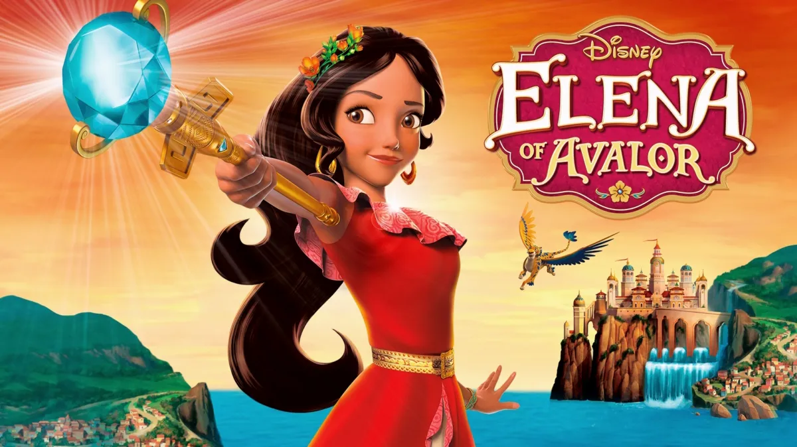
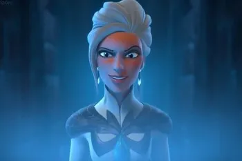

Elena of Avalor
The Complete Story
By; De'Kari Rucker : Apr 24, 2026

Elena of Avalor follows Princess Elena’s journey from a sheltered royal teen into a fully realized queen, shaped by tragedy, friendship, family, and magic. Her story begins in the prosperous kingdom of Avalor, where she grows up with her loving parents, the king and queen, and her younger sister Isabel. Isabel is extremely intelligent and inventive, and she shares a close, supportive bond with Elena. Their early life is filled with warmth, tradition, and royal responsibility—until everything is destroyed by the invasion of the powerful sorceress Shuriki.
Shuriki’s attack is sudden and devastating. She uses dark magic to take over Avalor, and during the chaos Elena’s parents are killed while protecting their daughters and their kingdom. Elena bravely attempts to stop Shuriki herself, but she is outmatched. In a desperate effort to save her, the royal wizard Alacazar uses the magical Amulet of Avalor to trap Elena inside it, preserving her life but removing her from the world for over four decades Along with her grandparents and younger sister Isabel, who Alacazar puts in a enchanted painting . With Elena and her family gone, Shuriki rules Avalor with fear and oppression, while the royal family is scattered and the kingdom falls into hardship.
During Shuriki’s long reign, Elena’s extended family plays a complicated role in the kingdom’s survival. One of the most important figures is her cousin Esteban, who grows up within the palace under Shuriki’s rule. Esteban becomes the kingdom’s royal chancellor, outwardly serving Avalor’s rulers while struggling with the secret that he alongside he and Elena's childhood friend, Vector Delgado helped Shuriki invade Avalor that day and is responsible for the untimely death of his aunt and uncle; the quenn and king of Avalor. His choices often place him in morally gray situations, making him one of the most complex figures in Elena’s story. Although he is family, his actions sometimes put him at odds with Elena once she returns, adding tension to the royal dynamic.

Years later, the amulet containing Elena is discovered by Sofia, a young princess who accidentally frees her. Elena returns to the world still a teenager, despite the decades that have passed. She is immediately confronted with the reality of her loss—her parents are gone, her sister is older and has grown up under hardship, and her kingdom has been shaped by fear. Despite this emotional shock, Elena quickly proves her bravery by confronting Shuriki once again. With the help of her allies, she ultimately defeats Shuriki and restores freedom to Avalor.
After Shuriki’s defeat, Elena does not immediately take the throne as queen. Instead, she chooses to become Crown Princess so she can learn how to lead responsibly. She forms a Grand Council to help govern, bringing together trusted friends and advisors. Among her closest allies are Naomi Turner, her adventurous and loyal best friend; Mateo, a kind and talented young wizard; and Gabe Núñez, who becomes a dedicated leader in the royal guard. Together, they help Elena rebuild Avalor and guide her through the challenges of leadership.
Elena’s relationship with her sister Isabel remains one of her strongest emotional anchors. Isabel’s creativity and intelligence often help solve problems in the kingdom, and she grows into an important inventor and leader in her own right. Meanwhile, Esteban’s role becomes more complicated as Elena learns more about his actions during Shuriki’s rule. Although he is family, his past decisions sometimes conflict with Elena’s sense of justice, creating emotional tension between duty, forgiveness, and trust.

As Elena continues her journey, she also discovers Avalor’s magical side, including the jaquins—spirit guardians who protect the kingdom and connect it to the spirit world. These beings, along with magical allies like Mateo and others, help Elena understand that ruling Avalor involves more than politics; it also involves protecting its spiritual balance.
Over time, a greater threat emerges in the form of the sorceress Ash Delgado, a calculating and powerful figure who secretly manipulates events behind the scenes. Unlike Shuriki’s direct conquest, Ash works through strategy, deception, and long-term planning. She studies Elena, her allies, and even internal divisions within the royal court, including tensions involving Esteban and others, to weaken the kingdom from within.
This growing danger forces Elena to mature further as a leader. She must balance forgiveness and justice, especially when dealing with complicated figures like Esteban, who is both family and a former participant in the old regime’s system. At the same time, she strengthens her bond with her closest friends. Naomi becomes a trusted voice of honesty and courage, Mateo grows more confident in his magical abilities, and Gabe remains a steady protector of the kingdom. Isabel continues to innovate and support the kingdom’s rebuilding efforts.

In the final conflict, Ash launches a full-scale attack on Avalor, bringing all her plans to fruition. The kingdom is once again in crisis, but Elena is no longer the inexperienced princess who first returned from the amulet. She unites her council, her family, her friends, the royal guard, and the magical forces of Avalor in a coordinated defense. Even Esteban, despite his complicated past, plays a role in the final resolution of the conflict, reflecting the story’s themes of redemption and family complexity.
Ultimately, Elena defeats Ash not through power alone, but through leadership, unity, and the strength of her relationships. With peace restored, she is crowned Queen of Avalor. Her journey ends with her fully stepping into her role as ruler, supported by her family—including Isabel and Esteban—and her lifelong friends. Elena’s story is ultimately about growth through loss, the complexity of family loyalty, and the idea that true leadership is built on both strength and compassion.